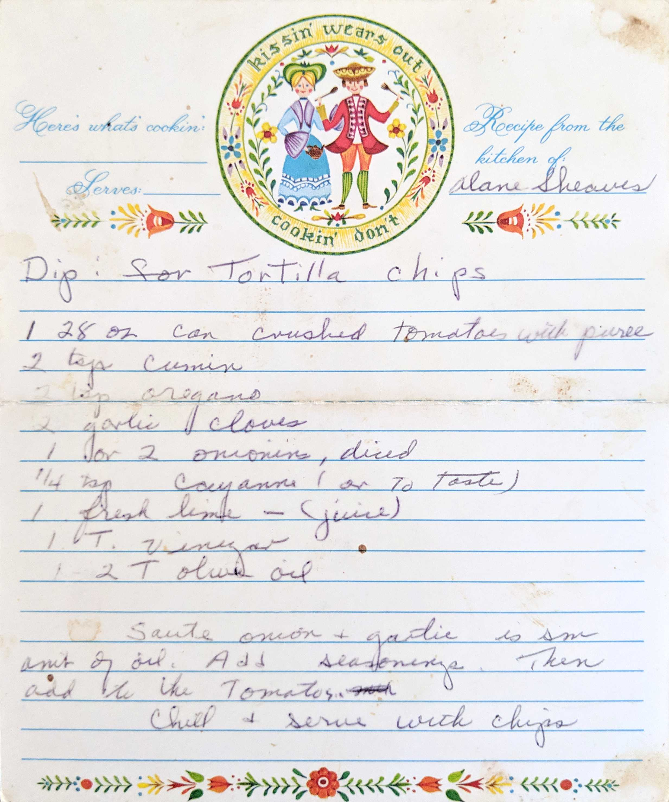

Dip: for Tortilla Chips
Alane Sheaves
1 28 oz can crushed tomatoes with puree
2 tsp cumin
2 tsp oregano
2 garlic cloves
1 or 2 onions, diced
1/4 tsp cayenne (or to taste)
1 fresh lime - (juice)
1 T. vinegar
1-2 T olive oil
Saute onion + garlic in vinegar and olive oil. Add seasonings. Then add the tomatoes.
Chill + serve with chips